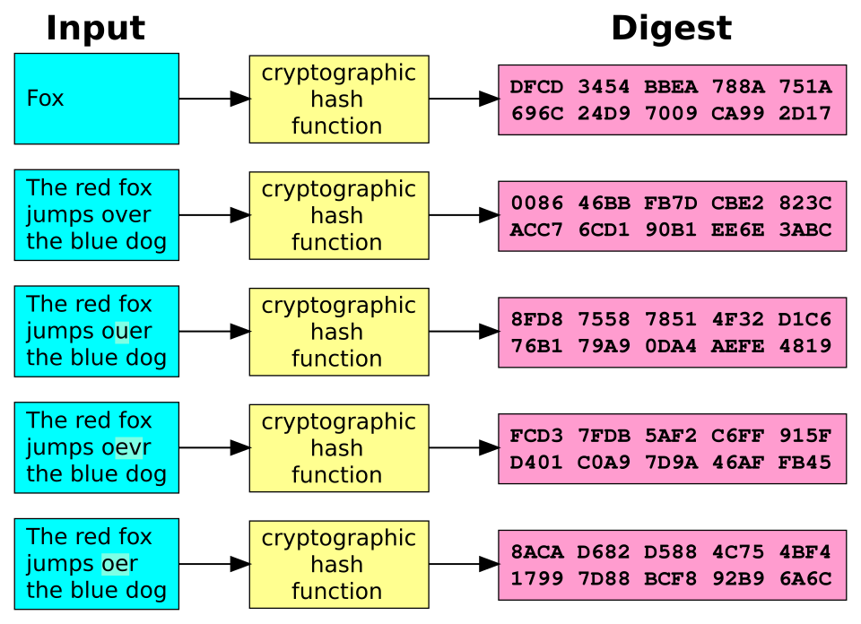

yoshitaka2
yoshitaka2
Good morning!
Nur das Schöne wird die Welt retten!
Fjodor Dostojewski
Nicht verzagen, Doc Alvers fragen!
Informatik — Grundkurs 11
Die Schutzziele
Vertraulichkeit, Integrität, Verfügbarkeit — und womit man sie erreicht
Nicht verzagen, Doc Alvers fragen!
Wo wir stehen
Bisher: Bedrohungen — Angriffe, Versagen, Katastrophen, Täuschung
Heute die Gegenseite: Was genau wollen wir eigentlich schützen?
Die Antwort sind die Schutzziele — jede Maßnahme dient mindestens einem
Leitfrage: Welches Schutzziel verletzt ein Vorfall — und was hätte es geschützt?
Nicht verzagen, Doc Alvers fragen!
Kapitel 01
Die Schutzziele
Was genau geschützt wird
Nicht verzagen, Doc Alvers fragen!
Drei Kernziele und zwei Ergänzungen
| Schutzziel | bedeutet | erreicht durch |
|---|---|---|
| Vertraulichkeit | nur Berechtigte können lesen | Verschlüsselung, Zugriffsrechte |
| Integrität | unverändert, Änderungen wären erkennbar | Prüfsummen, Signaturen |
| Verfügbarkeit | jederzeit abrufbar | Redundanz, Lastverteilung |
| Authentizität | die Herkunft ist nachgewiesen | Signaturen, Zertifikate |
| Verbindlichkeit | eine Handlung ist nicht abstreitbar | Signaturen, Protokolle |
Die ersten drei heißen auch CIA-Triade: Confidentiality, Integrity, Availability
Nicht verzagen, Doc Alvers fragen!
Integrität genau gelesen
Integrität verhindert Änderungen nicht — sie deckt sie auf
Wie das Siegel am Brief: Wer ihn öffnet, bricht es — und der Empfänger sieht es
Das Siegelbild zeigt zugleich, von wem der Brief kommt: Authentizität
Ohne Authentizität nützt auch Verschlüsselung wenig: Mit wem rede ich überhaupt?
Nicht verzagen, Doc Alvers fragen!
Welches Ziel ist verletzt?
| Vorfall | verletztes Schutzziel |
|---|---|
| Ein DDoS-Angriff legt den Schulserver lahm | Verfügbarkeit |
| Ein Kontostand wird unbemerkt geändert | Integrität |
| Eine Kundendatei liegt offen im Netz | Vertraulichkeit |
| Eine Mail trägt den gefälschten Absender der Schulleitung | Authentizität |
| Ein Käufer bestreitet, bestellt zu haben | Verbindlichkeit |
Trick: Fragen, was mit den Daten passiert ist — gelesen, verändert, unerreichbar, gefälscht?
Nicht verzagen, Doc Alvers fragen!
Kapitel 02
Hashwerte
Fingerabdrücke für Daten

Nicht verzagen, Doc Alvers fragen!
Prüfsumme und Hashfunktion
Eine Prüfsumme macht erkennbar, ob sich eine Datei verändert hat
Eine kryptografische Hashfunktion bildet aus beliebigen Daten einen festen, kurzen Wert
Sie ist praktisch nicht umkehrbar: Das Original lässt sich nicht zurückrechnen
Zwei verschiedene Eingaben sollen praktisch nie denselben Wert ergeben
Verschlüsselung dagegen ist umkehrbar — dafür ist sie da
Nicht verzagen, Doc Alvers fragen!
Ein Zeichen Unterschied
| Eingabe | SHA-256, die ersten 16 von 64 Hexziffern |
|---|---|
| Hallo | 753692ec36adb4c7 |
| hallo | d3751d33f9cd5049 |
| Hallo! | 357a57fe73d6c63b |
Ändert sich ein einziges Zeichen, ändert sich der Wert vollständig
SHA-256 liefert immer 256 Bit — egal, ob die Eingabe ein Wort ist oder ein ganzer Film
Geheim wird eine Datei durch ihren Hashwert nicht
Nicht verzagen, Doc Alvers fragen!
Passwörter richtig speichern
Ein Dienst speichert Passwörter als Hashwert, nicht im Klartext
Beim Anmelden wird der Hash der Eingabe mit dem gespeicherten verglichen
Wird die Datenbank gestohlen, liegen die Passwörter nicht sofort offen
Salt: ein zufälliger Zusatz je Passwort — gleiche Passwörter ergeben verschiedene Hashwerte
Vorberechnete Tabellen werden damit wertlos — der Salt darf offen gespeichert sein
Nicht verzagen, Doc Alvers fragen!
Kapitel 03
Schlüssel und Signaturen
Symmetrisch, asymmetrisch, Ende zu Ende
Nicht verzagen, Doc Alvers fragen!
Symmetrisch oder asymmetrisch
Symmetrisch
ein gemeinsamer Schlüssel für beide Seiten
schnell
Problem: Der Schlüssel muss sicher ausgetauscht werden
historisches Beispiel: die Enigma
Asymmetrisch
ein Schlüsselpaar: öffentlich und privat
der öffentliche verschlüsselt, der private entschlüsselt
kein geheimer Austausch nötig
in der Praxis werden beide kombiniert
Nicht verzagen, Doc Alvers fragen!
Eine Nachricht an Anna
Anna veröffentlicht ihren öffentlichen Schlüssel — den darf jeder kennen
Wer ihr schreibt, verschlüsselt mit Annas öffentlichem Schlüssel
Entschlüsseln kann nur, wer den passenden privaten Schlüssel hat — also nur Anna
Ende-zu-Ende: Nur Absender und Empfänger können lesen, der Anbieter nicht
Reine Transportverschlüsselung schützt nur den Weg, nicht vor dem Anbieter
Nicht verzagen, Doc Alvers fragen!
Die digitale Signatur
Der Absender signiert mit seinem privaten Schlüssel
Prüfen kann jeder — mit dem öffentlichen Schlüssel des Absenders
Nachgewiesen sind Urheber und Unverändertheit: Authentizität und Integrität
Geheim ist die Nachricht dadurch nicht — dafür braucht es zusätzlich Verschlüsselung
Signaturen schaffen auch Verbindlichkeit: Wer signiert hat, kann es nicht abstreiten
Nicht verzagen, Doc Alvers fragen!
Kapitel 04
Rechte und Abwägung
Wer darf was — und wie viel Schutz reicht?
Nicht verzagen, Doc Alvers fragen!
Erst wer, dann was
| Begriff | klärt | Beispiel |
|---|---|---|
| Authentisierung | Wer bist du? | Anmeldung mit Passwort und zweitem Faktor |
| Autorisierung | Was darfst du? | Lehrkraft trägt Noten ein, Schüler lesen nur |
Die Reihenfolge ist immer gleich: erst die Identität, dann die Rechte
Prinzip der geringsten Rechte: nur die Rechte, die für die Aufgabe nötig sind
Ein übernommenes Konto richtet dann weniger Schaden an — und Rechte fallen mit der Aufgabe weg
Nicht verzagen, Doc Alvers fragen!
Eigene und fremde Daten schützen
Festplattenverschlüsselung schützt ein verlorenes oder gestohlenes Notebook — im ausgeschalteten Zustand
Im laufenden Betrieb schützt sie nicht vor Schadsoftware — und sie ersetzt keine Sicherung
Fremde Daten: Wer eine Klassenliste verwaltet, muss sie vertraulich halten
Recht am eigenen Bild: Fotos anderer nur mit ihrer Einwilligung veröffentlichen
Nicht verzagen, Doc Alvers fragen!
Sicherheit ist eine Abwägung
Mehr Schutz bedeutet meist mehr Aufwand — und erschwert die Nutzung
Strenge Rechte können die Verfügbarkeit verschlechtern
Sehr hohe Verfügbarkeit kostet überproportional viel
Deshalb gilt: Der Schutz muss zum Schutzbedarf passen
Nicht verzagen, Doc Alvers fragen!
Vertraulichkeit, Integrität, Verfügbarkeit — dazu Authentizität und Verbindlichkeit: Jeder Vorfall verletzt mindestens eines dieser Ziele, jede Maßnahme dient mindestens einem.
Merksatz
Nicht verzagen, Doc Alvers fragen!
Fun Facts
Die CIA-Triade hat nichts mit dem Geheimdienst zu tun: Confidentiality, Integrity, Availability
Polnische Mathematiker um Marian Rejewski knackten die Enigma schon 1932 — Jahre vor Bletchley Park
Verschlüsselung mit öffentlichem Schlüssel stellten Diffie und Hellman 1976 vor
Der britische Geheimdienst kannte die Idee schon früher — und hielt sie bis 1997 geheim
Nicht verzagen, Doc Alvers fragen!
Eure Aufgabe
Partnerarbeit: Findet zu jedem Schutzziel ein Beispiel aus Schule oder Alltag
Zuordnungsübung: Vorfallkarten dem verletzten Schutzziel zuordnen — mit Begründung
Zu jedem Vorfall: eine Maßnahme, die ihn verhindert oder aufgedeckt hätte
Knobelfrage: Welches Schutzziel leidet, wenn Rechte zu streng sind?
Zum Schluss: Aufgaben (20) auf der Planseite — Lösung pro Aufgabe zum Aufklappen
Nicht verzagen, Doc Alvers fragen!